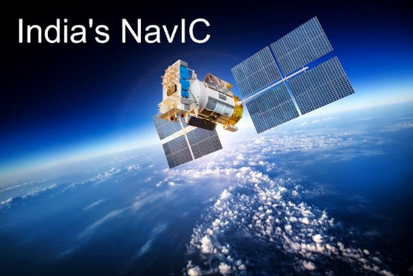

Study India's Contribution to Satellite Technology
The NAVIC system, India's regional navigation satellite system, provides accurate location services tailored for India and surrounding regions. NAVIC supports applications like navigation for fishermen, disaster response, and tracking systems.
India's satellites are also instrumental in weather prediction, helping forecast cyclones and monsoons with precision. These technologies enhance agricultural planning, ensure safety during natural disasters, and promote economic growth. The Indian Space Research Organisation (ISRO) continues to propel India's achievements in space technology to global prominence.
 CLICK here to go Home